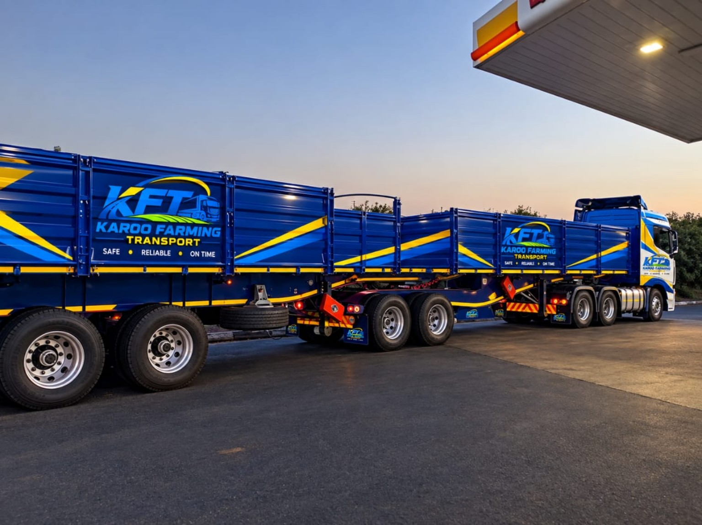
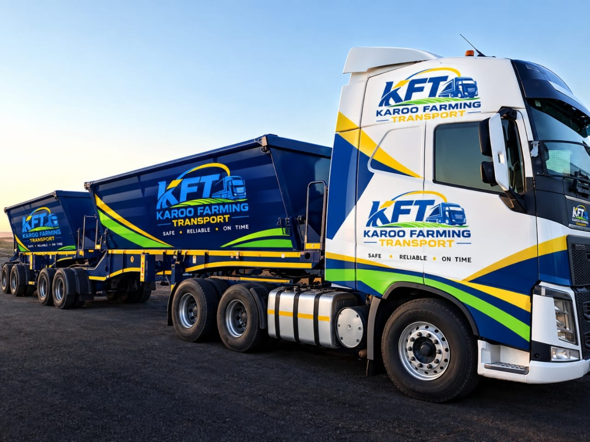
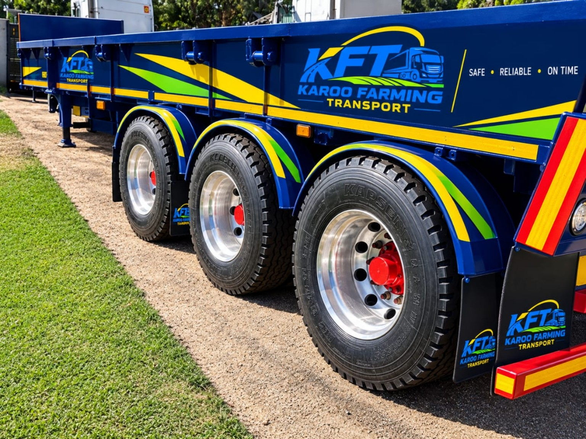

01 / LIGHT DELIVERY
1-Ton Light Delivery
Suitable for smaller cargo, parcels, documents and local delivery requirements where a lighter vehicle is appropriate.
Enquire about availability →01 TON
From lighter deliveries to substantial loads, let's find the right transport fit.
The fleet categories below reflect the vehicle options described in the existing company website. Final availability and suitability should be confirmed when requesting a quote.

Suitable for smaller cargo, parcels, documents and local delivery requirements where a lighter vehicle is appropriate.
Enquire about availability →
A practical option for retail stock, building materials, furniture and medium-sized loads.
Enquire about availability →
For substantial cargo such as containers, bulk loads, heavy machinery and industrial equipment, subject to load and route assessment.
Enquire about availability →We'll discuss the load, route, dimensions and timing with you.